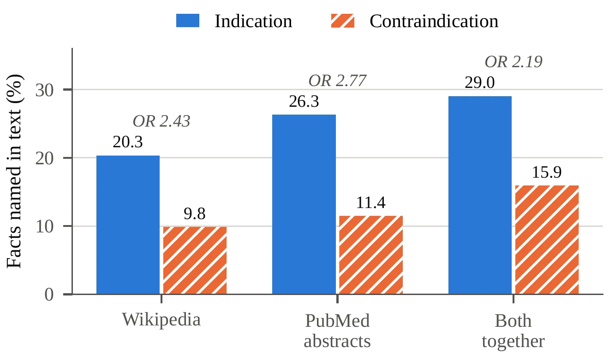
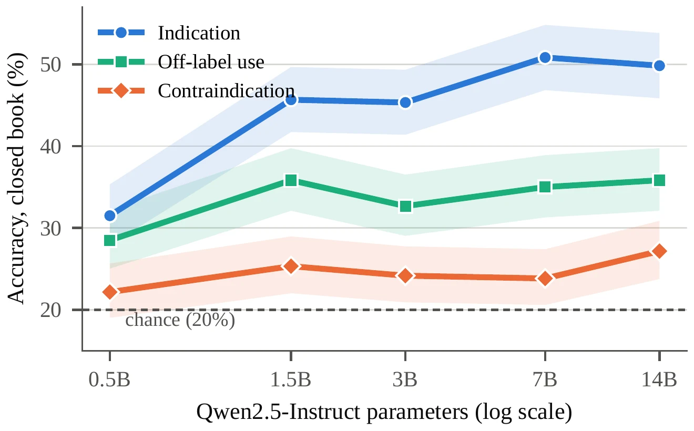
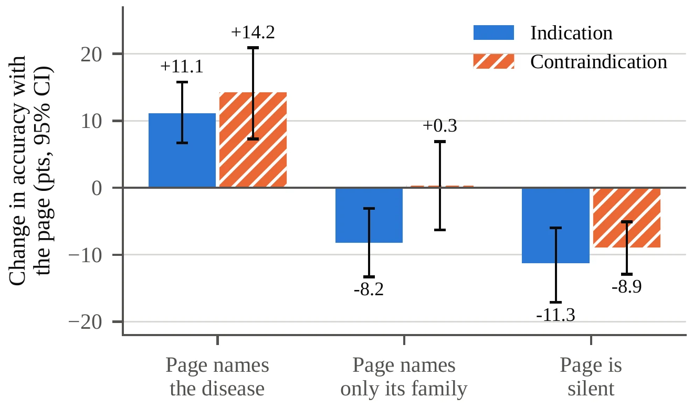
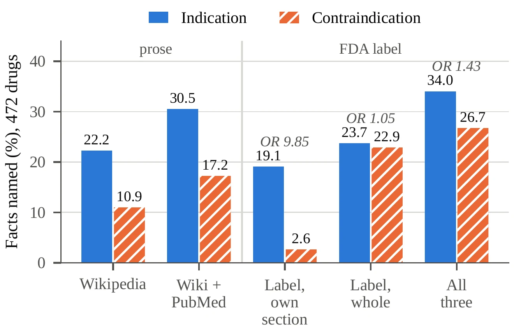
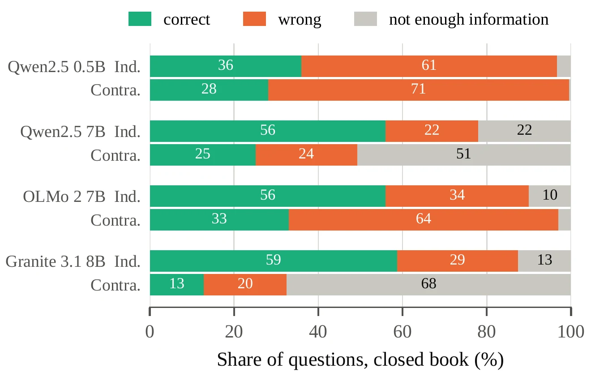
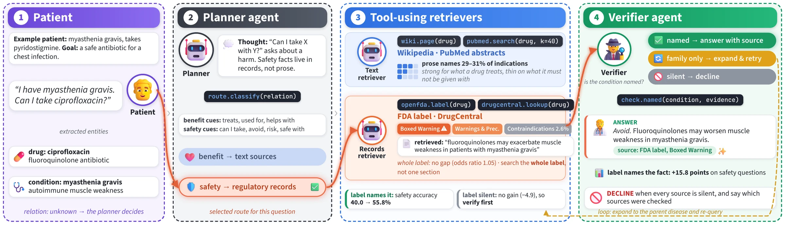

LABEL: Literature Asymmetry between Efficacy and Limits in Drug Knowledge and Language Models
arXiv preprint, 2026. Under review at the AAAI 2027 Workshop on Health Intelligence (W3PHIAI)
Prose names what a drug treats about twice as often as who must not take it, and language models inherit the gap. The FDA label shows no gap, so routing safety questions to the label recovers the missing facts.
Every drug has two kinds of fact: its efficacy, what it treats, and its limits, who must not take it. Naproxen's Wikipedia page names gout and rheumatoid arthritis but not active peptic ulcer disease. A wrong limit can hurt a patient, yet people write about benefits far more than risks, and large language models learn from that writing.
We measure how often Wikipedia, PubMed and the FDA label name each drug fact, comparing indications and contraindications inside the same drug so a famous drug cannot skew the result. We then test seven language models on the same facts, closed book and with a retrieved passage, and test a routing rule that sends safety questions to the label.
Study at a glance
| Facts | 574 PrimeKG drugs with 3 indications and 3 contraindications each; disease families from MONDO |
|---|---|
| Sources | Wikipedia, PubMed abstracts and the whole FDA label (472 drugs) |
| Matching | Exact name, alternative name, family only or absent, with a random floor for chance matches and an LLM judge checked against four annotators (Fleiss' κ 0.89 and 0.92) |
| Models | Qwen2.5 from 0.5B to 14B, OLMo-2 7B and Granite-3.1 8B |
| Questions | Five-option closed-book questions, plus 856 harder questions with sibling distractors and “Not enough information” |
| Control | Hetionet treats against palliates, two positive relations |

Findings
- Prose names uses about twice as often as limits. The within-drug odds ratio is 2.43 in Wikipedia, 2.77 in PubMed and 2.19 for both together.
- The FDA label has no gap. The whole label names uses and limits at the same rate (odds ratio 1.05, p = 0.62), so the gap comes from the prose, not the matcher. Most limits sit in the Boxed Warning and Warnings sections, not the Contraindications section.
- Bigger models learn uses, not limits. From Qwen2.5 0.5B to 14B, accuracy on indications rises by 18.3 points; accuracy on contraindications stays near the 20% chance level.
- Models read safety facts well when they are given. A passage that names the condition helps limits at least as much as uses (+14.2 against +11.1 points). Family-only and silent passages do not help.
- The gap is specific to risk. Two positive relations in Hetionet, treats and palliates, show no gap (odds ratio 1.05).
- Routing to the label helps when the label names the fact. On those safety questions, a label passage raises accuracy from 40.0% to 55.8%.





Related work
CLADE: Category-Level Answering from Deficient Evidence in Retrieval-Augmented Language Models
arXiv preprint, 2026. Under review at the AAAI 2027 NeuSymBridge WorkshopIdentifying and Resolving Pitfalls of Knowledge-Based VQA Benchmarks: Auditing, Repairing, and Augmenting
European Conference on Computer Vision (ECCV 2026)How Finely Can Vision-Language Models See Biology? Bio-VQA: A Benchmark for Taxonomic, Morphological, Spatial and Individual Reasoning
IEEE/CVF Winter Conference on Applications of Computer Vision (WACV 2027)
Cite
@article{rayeed2026label,
title = {LABEL: Literature Asymmetry between Efficacy and Limits in Drug Knowledge and Language Models},
author = {Rayeed, S M and Stewart, Charles V. and Ma, Yao},
journal = {arXiv preprint arXiv:2611.19166},
year = {2026}
}